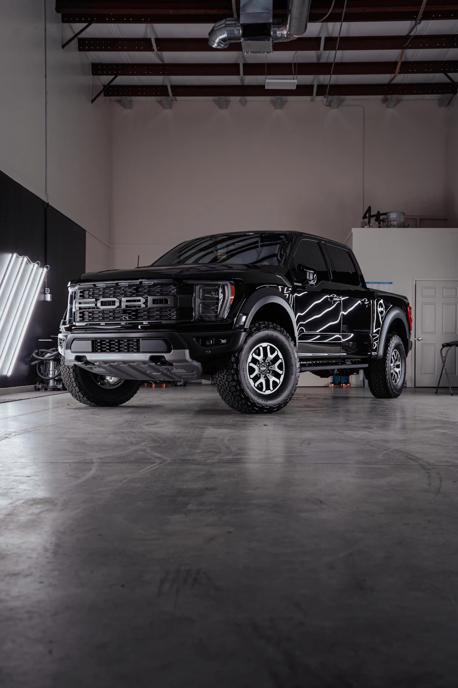

Case 01 · Wash bay
Black pickup after five months of ski-season salt
A white film of magnesium chloride on the frame rails and wheels that the owner’s home hose couldn’t shift.
- Service
- Bead Shield, underbody flush, wheel ceramic
- Time
- 2 h 10 min
- Paid
- $250
- Result
- Wheels now rinse clean in seconds